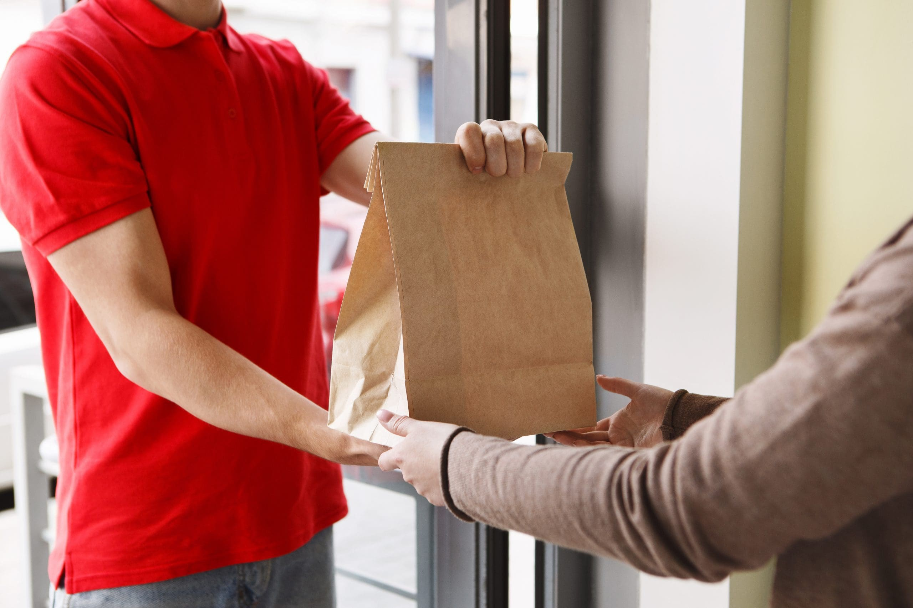
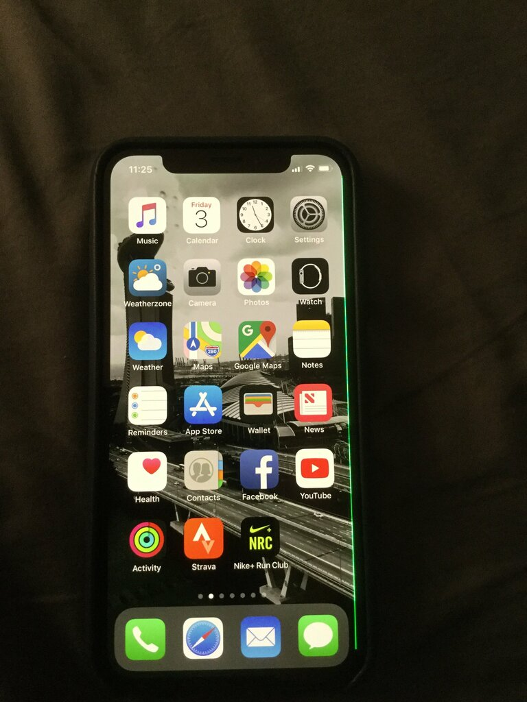

Эффект латте
Так называют привычку тратить понемногу, но каждый день. Одна чашка кофе по дороге на пары ничего не значит. Двадцать чашек в месяц — это уже заметная строчка в бюджете, а за год набегает больше, чем стипендия за несколько месяцев.
Коварство мелких трат в том, что их не замечаешь. Крупную покупку обдумываешь заранее, а за кофе платишь телефоном на ходу и через минуту забываешь.
Считаем за год
Возьмём обычный месяц студента: кофе в будни, пара заказов доставки в неделю и несколько подписок.
- Кофе навынос, 20 × 180 ₽
- 3 600 ₽
- Доставка, 4 × 600 ₽
- 2 400 ₽
- Подписки
- 1 180 ₽
- Итого в месяц
- 7 180 ₽
- За год, × 12
- 86 160 ₽
В месяц выходит 7 180 ₽ — примерно столько же, сколько уходит на транспорт и учёбу вместе. За год это 86 160 ₽, хотя ни одна покупка по отдельности не дороже шестисот рублей.

Где прячутся мелкие траты

- Кафе и кофе навынос. Самая заметная категория у студентов: перекус между парами, кофе по дороге, обед в кафе вместо столовой.
- Доставка. К цене блюда добавляются доставка и сервисный сбор, и заказ выходит почти вдвое дороже той же еды из магазина.
- Подписки. Музыка, кино, облако, игры. Часть из них ты давно не открываешь, но деньги списываются каждый месяц.
- Такси на короткие расстояния. Поездка на три остановки стоит как десяток поездок на автобусе.
Найти такие траты проще всего в ленте месяца: категории с множеством мелких записей сразу видны.
Как сократить и не страдать
Отказываться от всего не нужно — так учёт быстро превратится в наказание. Лучше выбрать одну категорию и поставить на неё лимит в разделе «Бюджеты». Например, кофе только три раза в неделю, а в остальные дни термокружка из дома.
Раз в квартал пересматривай подписки и отключай те, которыми не пользовался последний месяц. Даже две отключённые подписки дают несколько тысяч в год.
Поставить лимит